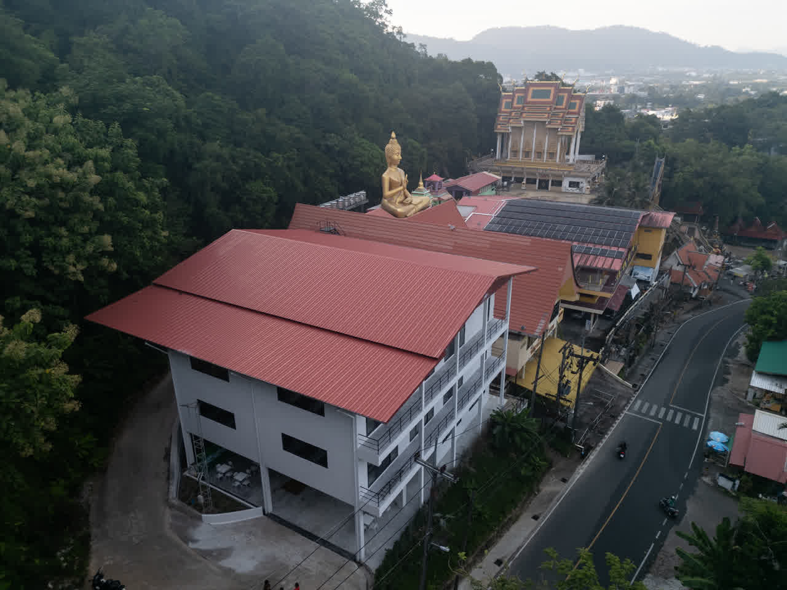
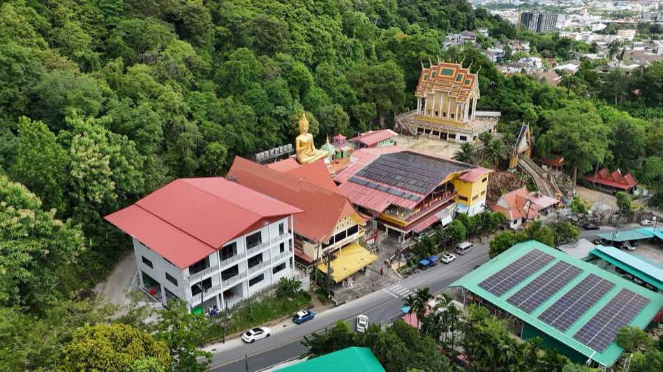

ขอให้เราช่วยลดภาระในยามป่วยไข้
ขอให้เราได้เป็น ‘ใครสักคน’ ในยามที่พี่ๆ ยากลำบาก.. หายไวๆ ขอให้สุขภาพแข็งแรงนะคะ
โดยวัดเขารังสามัคคีธรรมและชุมชนภูเก็ต
บ้านพึ่งวัดเริ่มต้นจากปณิธานของคุณอรสา ที่อยากเห็นผู้ป่วยและครอบครัวที่เดินทางมารักษาตัวในภูเก็ต มีที่พักพิงที่ปลอดภัยและอบอุ่น โดยไม่ต้องกังวลเรื่องค่าใช้จ่าย
จากแรงศรัทธาหนึ่งดวง ขยายสู่งานผ้าป่าที่ชุมชนภูเก็ตร่วมกันสมทบทุน จนกลายเป็นอาคาร 100 เตียงที่ยืนอยู่ได้ด้วยน้ำใจของหลายฝ่าย
บ้านหลังนี้กำหนดเปิดรับผู้เข้าพักในเดือนสิงหาคม 2569 เป็นต้นไป .todo รายละเอียดเต็มรอเนื้อหาจาก B9
อ่านเรื่องราวทั้งหมด

ไม่มีค่าใช้จ่ายใดๆ ตลอดระยะเวลาที่ต้องรักษาตัว เปิดรับผู้ป่วยและญาติที่ขาดแคลนทุนทรัพย์อย่างเท่าเทียม
ตั้งอยู่ใกล้โรงพยาบาล ลดภาระการเดินทางในวันที่ร่างกายและกำลังใจต้องการพักผ่อนที่สุด
ดำเนินการโดยวัดเขารังสามัคคีธรรม ร่วมกับโรงพยาบาลวชิระภูเก็ตและมูลนิธิสิริวัฒนภักดี เพื่อความยั่งยืนของบ้านหลังนี้


โทรแจ้งความประสงค์ ทีมงานตรวจสอบสิทธิ์และห้องว่างเบื้องต้น
เอกสารยืนยันตัวตนและใบนัด/ใบส่งตัวจากโรงพยาบาล
เข้าพักได้ทันทีเมื่อผ่านการคัดกรอง ไม่มีค่าใช้จ่ายตลอดการรักษา

เจ้าภาพและผู้ดูแลโครงการ
.todo รอไฟล์โลโก้ประสานการรักษาและส่งต่อผู้ป่วย
.todo รอไฟล์โลโก้ร่วมสนับสนุนการก่อสร้างและดำเนินงาน
.todo รอไฟล์โลโก้รอเนื้อหาและภาพกิจกรรมจริงจากทีมวัด
รอเนื้อหาและภาพกิจกรรมจริงจากทีมวัด
รอเนื้อหาและภาพกิจกรรมจริงจากทีมวัด
ทุกการบริจาคช่วยให้บ้านพึ่งวัดดูแลผู้ป่วยและครอบครัวได้อย่างต่อเนื่อง